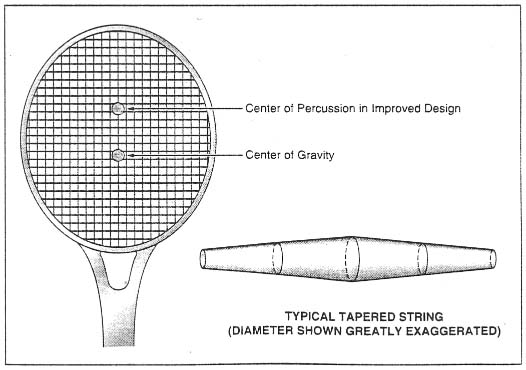

NASA Tech Briefs, March 1995

Displacement of the Center of Percussion away from the center of gravity and toward the toe improves the power, feel, and control achievable with the racquet. The improvement involves the use of tapered strings.
One of the unexpected benefits of research in outer space is a design concept for a better performing tennis racquet. The essence of the concept is to taper the strings in such a way as to shift the center of percussion (also called the "sweet spot") toward the toe (the outer end of the racquet, farthest from the player's hand).
This concept originated more than 20 years ago in NASA studies of networks of strings for connecting platforms in outer space. Researchers found that changing the diameters of strings could radically change the stability of a network against vibration. This idea was inspired by an experiment in which a space-borne spider was coaxed to spin a good web and was observed to make its web with threads of nonunifomm size.
The major difficulty in designing a high performance tennis racquet arises from the difference between the position of maximum speed (the toe) and the position of optimum vibration (the sweet spot). In a typical older design, the sweet spot is at the geometric center of the strung area of the racquet. The impact of the ball on the sweet spot causes minimal kick or jar to be transmitted to the player's hand. However, the average player tends to strike the ball farther out toward the toe, and to obtain maximum power on serves, it is necessary to strike the ball as close as possible to the toe. Thus, performance can be improved by moving the sweet spot outward (see figure).
In addition to increasing power on serves, tapering the strings to move the sweet spot outward improves the player's control and the feel of the racquet in the player's hand. An important element of improved control is increased stability the racquet is less likely to twist in the player's hand on off-center shots. An important element of better feel is better absorption of vibrations; this is especially important for players who have chronic arm problems. The optimization of the tapers of the strings for a given racquet design is based on the fundamental physics of vibrating strings. A computer performs the optimization numerically, by use of a genetic algorithm. As its name suggests, a genetic algorithm implements a mathematical evolutionary process that resembles biological evolution in some respects and that arrives at an optimized design (distribution of mass along each string) by following a sequence of random design changes and preserving those changes that improve performance.
The string material can be nylon, animal gut, or other naturally or artificially spun threads. The string can be attached to a conventional racquet frame. The required distribution of mass along each string can be achieved by spinning the string thicker or bonding different string materials along a central braid in the string.
This work was done by David A. Noever of Marshall Space Flight Center.
Inquiries concerning rights for the commercial use of this invention should be addressed to the Patent Counsel, Marshall Space Flight Center. Refer to MFS-28922.